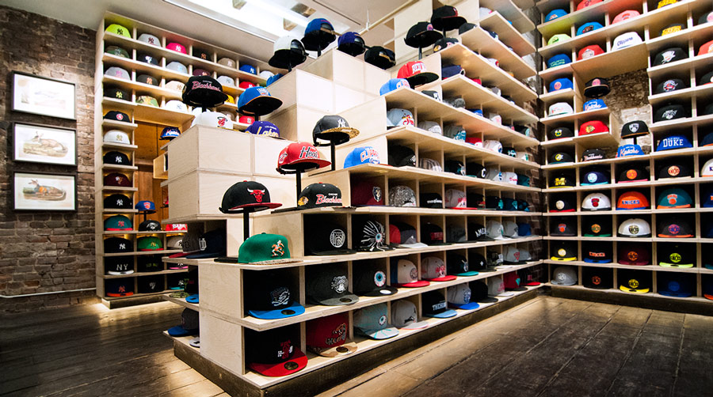

Hat Club SoHo is an adaptable retail shop.

By housing the merchandise in 420 modular boxes, the shop can evolve as needed to address shopper demand. If the need arises to add, change, twist or turn inventory, the design can accommodate accordingly.

The dimensions of the box allow for easy rotation and endless display options.

Integrating these two functions maximizes the available inventory in the space.

Dating back to 1898, the shop is located in the oldest freestanding building in SoHo.

Demolition revealed unexpected gems which the design adapted to highlight.

Exposing the building’s relics contrasts the product’s clean lines & bright colors.
Inspired by old New York, the reimagined identity was created to continue the concept of old vs. new.

The interior architecture acts as the window display which glows at night on an otherwise dark street.

Sloping down the "mountain" allows entering shoppers to see the entire 210 square feet.
All aspects of the project live together as one, down to the smallest elements.

The UPcycling of waste material from the boxes evolved into the skin of the cash wrap

The brand informs the Architecture as the Architecture informs the brand.